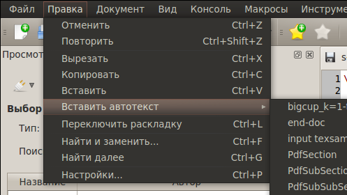
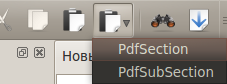

[Назад: 2. Основные функции]
[Далее: 2.2. Поиск]
Редактирование
Копирование и вставка
К простейшим операциям редактирования можно отнести такие действия, как Вырезать, Копировать и
Вставить. Они доступны в меню Правка, либо на панели инструментов:


Также можно воспользоваться сочетаниями клавиш: Ctrl+X, Ctrl+C и Ctrl+V соответственно.
Вставка текста
Кроме стандартного копирования и вставки в TeX Creator есть возможность вставить в документ заранее заготовленный
текст. Это полезно, если вы часто пользуетесь каким-либо шаблонным участком текста, так как отпадает необходимость
вводить этот текст каждый раз вручную.
Чтобы воспользоваться функцией вставки текста, нужно выбрать желаемый текст из списка в меню Вставить автотекст:

Этот список также доступен на панели инструментов (кнопка справа от кнопки Вставить):

Отмена и повторение действий
Каждое действие с текстом, будь то ввод символа, вставка или удаление, может быть отменено. Отмененное действие, в свою
очередь, можно повторить снова. Для этого нужно воспользоваться действиями Отменить и Вернуть меню
Правка, соответственно, либо нажать соответствующую кнопку на панели инструментов:


либо задействовать горячие клавиши: Ctrl+Z и Ctrl+Shift+Z, соответственно.
Переключение раскладки текста
Переключение раскладки текста означает изменение выделенного участка текста таким образом, будто он был введен с
использованием другой раскладки клавиатуры. Например, если вы хотели ввести слово "тест", но забыли переключить
раскладку, то вместо этого будет введено "ntcn". Если вы успели ввести большой объем текста, то ошибка становится
весьма досадной.
Чтобы использовать переключение раскладок, нужно выделить текст и воспользоваться сочетанием клавиш Ctrl+L.
Если не удается однозначно определить, при какой раскладке был введен текст, а также если какие-то из выделенных
символов отсутствуют в словаре, то никаких действий выполнено не будет.
Важно: Начиная с версии 4.0.0 функция переключения раскладки перенесена в отдельный плагин.
[Назад: 2. Основные функции]
[Далее: 2.2. Поиск]